22:07
需要处理
Activity continuity and return paths
AIOS 概念设计
统一合集与 Activity 的返回路径
上海出差
洞察报告
报销用发票

会议入场二维码
行程信息
待办清单
- 跟酒店确认开票
- 把报告发给陈老师
- 会议资料已下载
周末聚餐
餐厅
已选地点预订
一起去的人
4路线
想吃的
花费
晚餐账单待结算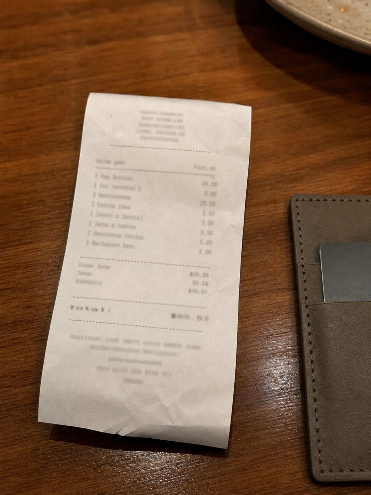
空间
长期存在，并始终保留在原位。
合集
最近
浏览
所有合集
音乐
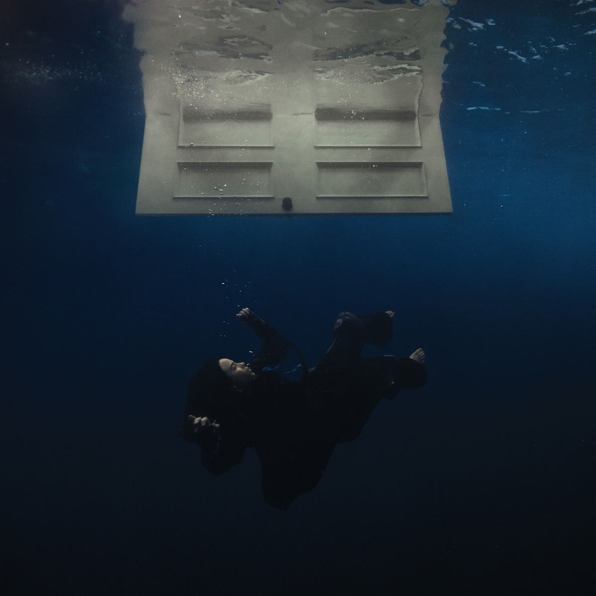
BIRDS OF A FEATHER
Billie Eilish
我的合集
今天终于把方案讲完了
今天终于把那个方案讲完了。
上台之前还是有点紧张，坐在位置上又把那本浅蓝灰封面的方案册翻了几遍，前一晚改过的开头夹在最前面。真正开始以后反而没想那么多，顺着熟悉的部分一路讲下去。中间有人追问为什么一定要把“事情”放在 App 前面，我停了一下，发现这个问题反而把前面的逻辑串起来了。
结束以后没有想象中那么兴奋。把方案册合上塞进包里，下楼时雨刚停。折叠伞还湿着，我就一直拎在手里，在楼下站了一会儿。路边还有一点积水，风吹过来的时候挺凉的。
回去的路上又翻了一遍今天的页面，还是能看到不少想改的地方。不过至少现在它已经不是脑子里模模糊糊的一团东西了。
今天先到这里。
去迪士尼玩了一整天
今天基本一整天都待在迪士尼。
上午进去的时候人还没有想象中那么多，第一件事就是往里面走，路过城堡的时候还是停下来拍了好几张。太阳挺晒的，中午开始明显有点累，买了杯冰饮坐在路边休息，看着人一拨一拨从面前过去。
下午玩了几个项目，排队的时候反而聊了很多乱七八糟的东西。后来碰上花车巡游，原本只是站在边上随便看看，结果音乐一响，周围的人一下全兴奋起来了。
晚上一直待到天黑。城堡亮起来以后和白天完全是两个感觉，最后看完烟花才往外走。回去的时候脚已经很酸了，手机里也多了一堆照片。
虽然累，但今天确实玩得很开心。
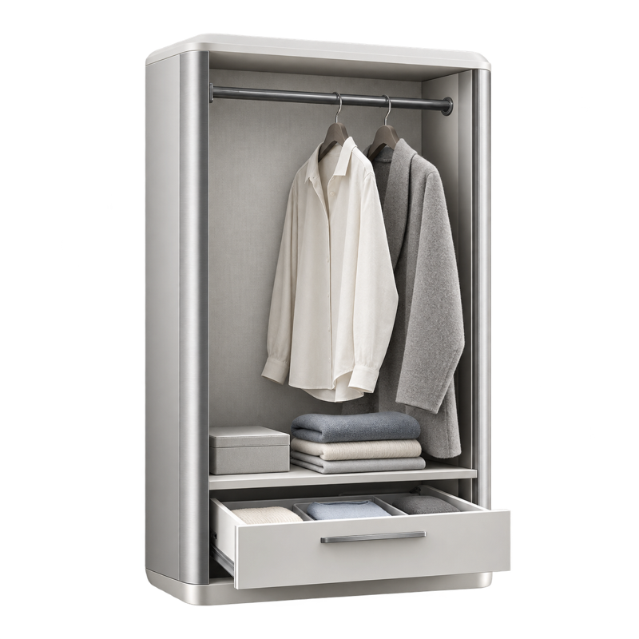
设计对象
AIOS Interface Sketch
今天 16:31 编辑
可用操作
所属
此对象显示在这里，因为它创建于 AIOS 概念设计活动。
相关
2已固定合集
穿搭
46 套穿搭 · 68 个来源对象
收录依据
68 个对象根据完整穿搭组合，整理自你确认保留的照片与购买记录。
库视图
情境
通过对象所在的空间和活动找到它们。
空间
AIOS
空间
个人
对象按关联关系呈现，而不是通讯录列表。
试试“来自两个月前某次会议的蓝色汽车图片”。
继续浏览
整个 AIOS
AI 指令
整理这些内容
合集建议
建议形式
日记
28 篇日记 · 5–8 月
- 顺序
- 按时间排列
- 包含
- 日记、笔记、语音回顾
- 视觉形式
- 布面日记本
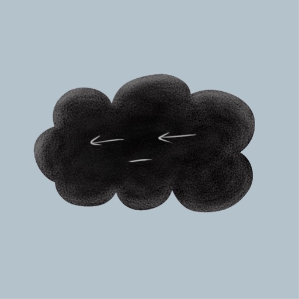
你今天终于把方案讲完了
今天终于把那个方案讲完了。
上台之前还是有点紧张，坐在位置上又把那本浅蓝灰封面的方案册翻了几遍，前一晚改过的开头夹在最前面。真正开始以后反而没想那么多，顺着熟悉的部分一路讲下去。中间有人追问为什么一定要把“事情”放在 App 前面，我停了一下，发现这个问题反而把前面的逻辑串起来了。
结束以后没有想象中那么兴奋。把方案册合上塞进包里，下楼时雨刚停。折叠伞还湿着，我就一直拎在手里，在楼下站了一会儿。路边还有一点积水，风吹过来的时候挺凉的。
回去的路上又翻了一遍今天的页面，还是能看到不少想改的地方。不过至少现在它已经不是脑子里模模糊糊的一团东西了。
今天先到这里。
今天终于把方案讲完了
删除这篇日记？
识别附近餐饮需求
确认当前位置
比较步行范围内餐厅
核对营业与人均信息
整理推荐餐厅
附近餐饮，24条结果
周边有什么好吃的？
内容由 AI 生成
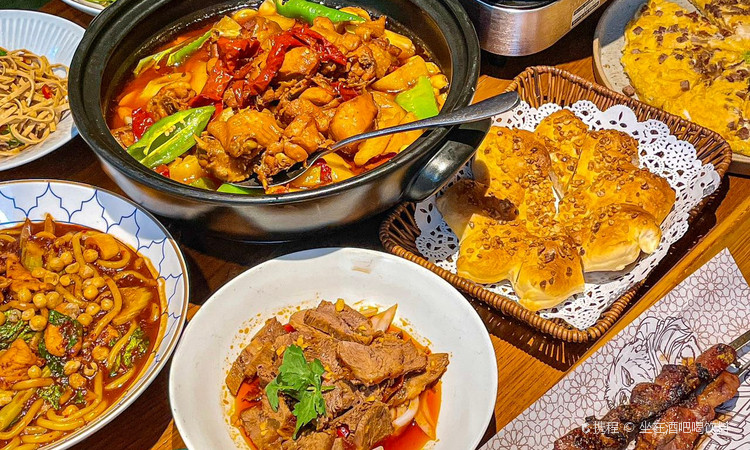
纳瓦新疆音乐餐厅 4.6 · 新疆菜 · 650 m 约 ¥95 / 人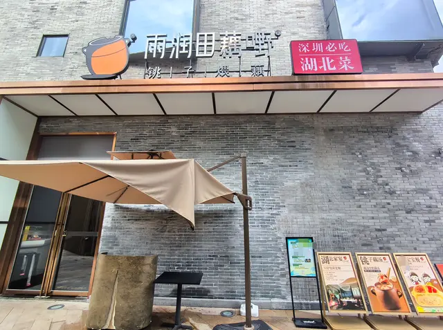
雨润田·藕嘢 4.5 · 湖北菜 · 700 m 参考 ¥41–100 / 人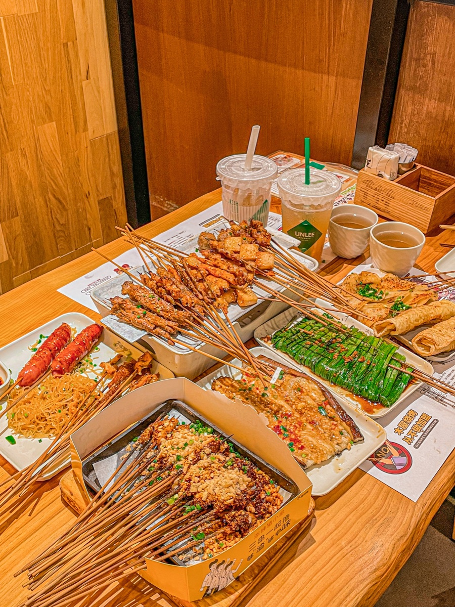
木屋烧烤 4.3 · 烧烤 · 760 m 约 ¥79 / 人 先启半步颠小酒馆
3.8 · 川菜 · 1.2 km
约 ¥84 / 人
先启半步颠小酒馆
3.8 · 川菜 · 1.2 km
约 ¥84 / 人
 79号渔船海鲜饭店
4.7 · 海鲜 · 950 m
约 ¥160 / 人
79号渔船海鲜饭店
4.7 · 海鲜 · 950 m
约 ¥160 / 人
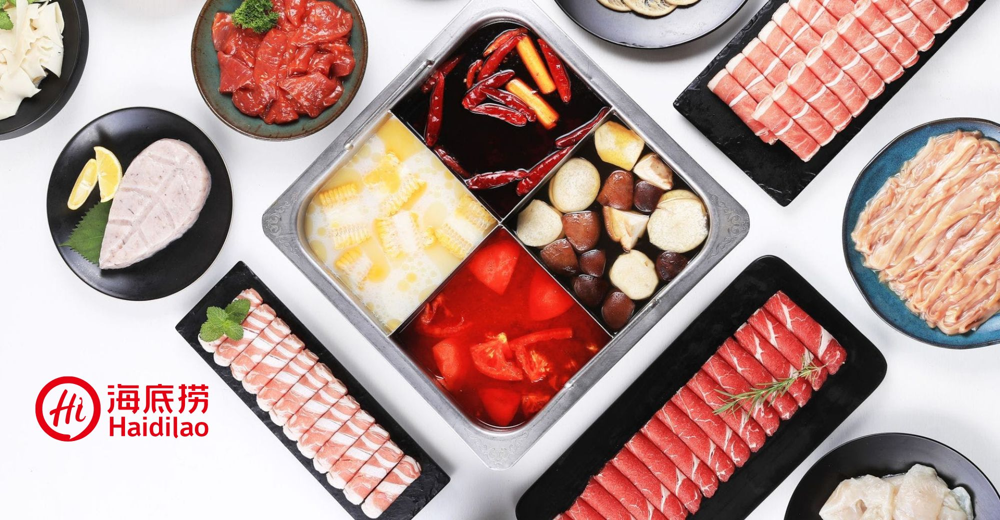
海底捞火锅 4.8 · 火锅 · 380 m 约 ¥113 / 人识别目标餐厅
查找八合里招牌菜
核对高频推荐菜品
整理菜品信息
生成招牌菜页面
八合里潮汕鲜牛肉火锅
潮汕牛肉火锅 · 步行约 6 分钟
招牌菜

至尊牛肉三拼
嫩肉、吊龙与肥牛，一盘尝到三种口感。
吊龙伴
肥瘦相间，短涮至刚熟更嫩。

熟牛肉丸
紧实弹牙，适合在清汤里慢慢煮透。

牛骨清汤锅
汤底清鲜，涮过牛肉后更有肉香。

特色酥牛肉
外层酥脆，适合趁热直接吃。
识别出差目的地
确认当前出发地
查询可选航班
比较时间与价格
整理购票信息
机票查询
我最近要去深圳出差，
帮我看下机票
内容由 AI 生成
行程
- 出发日期
- 8月28日 · 周五
8月29日
今天
农历七月十七
bananafish书店
便便单
异国日记
便便单
设计灵感–
detailgarden.replit.app
便便单
“月末周六工作日”
WWeLink｜华为日历2026
WAIC 2026 洞察 & 2012实验室知识产权保护策略2.0介绍
WWeLink｜仅线上
临时聊天
聊天内容只留在当前区域，不会被记忆或出现在对话历史记录中
你好
你好！很高兴见到你。今天想聊什么
通话已结束，正在整理情绪笔记
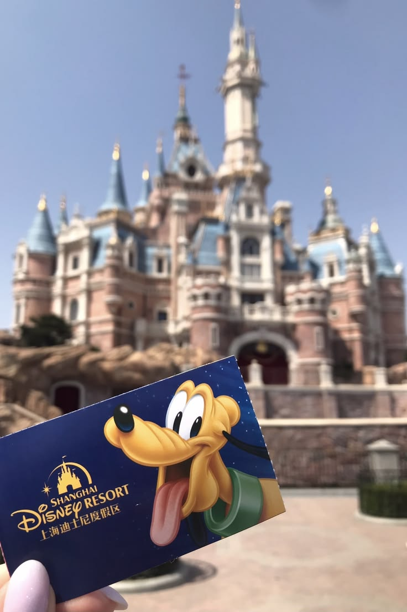
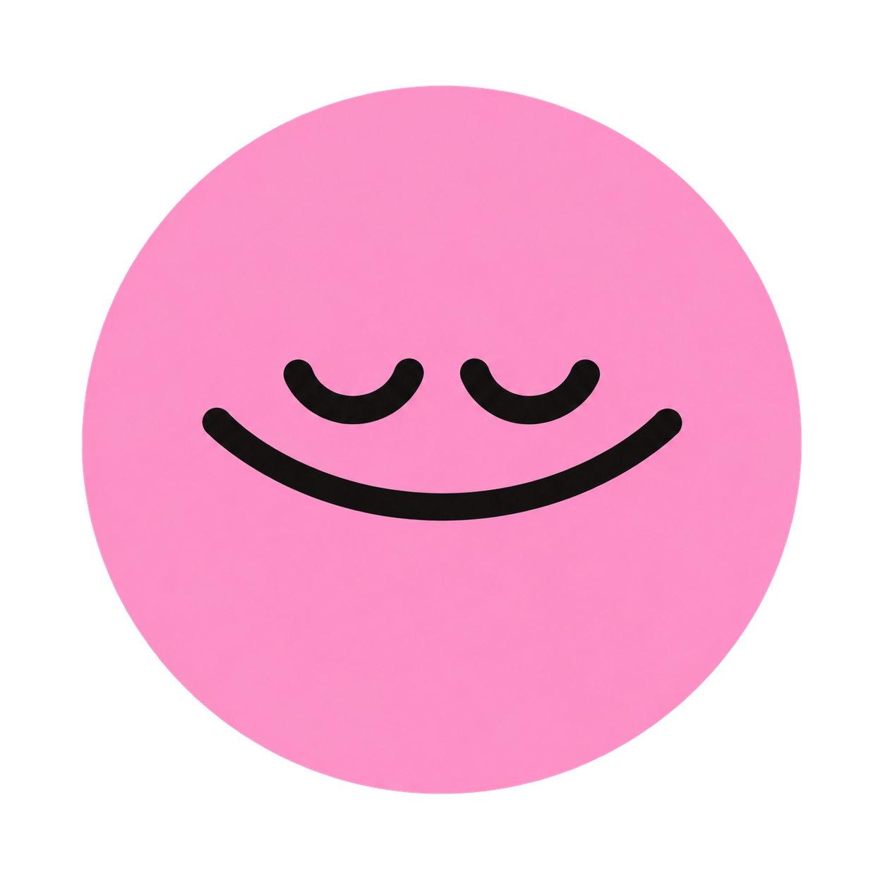
迪士尼一日游
今天真的玩得特别开心。
迪士尼一日游
昨天晚上明明说好要早点睡，结果我还是兴奋到快一点才放下手机。早上进园的时候人其实还有点懵，直到远远看到城堡，才突然反应过来：啊，真的来迪士尼了。我们先在城堡前面拍照，我举着票拍了好几张，第一张还完全糊掉了，但现在看反而很像今天的开场，乱乱的，又特别开心。
上午基本一直在赶项目，边排队边研究下一站去哪。大家每次走进商店前都说“这次一定不买东西”，结果进去以后还是每个架子都要看一遍。我本来觉得排队会很无聊，后来发现我们光是在队伍里讲废话就能讲很久，轮到玩的时候反而有点舍不得这段排队时间结束。
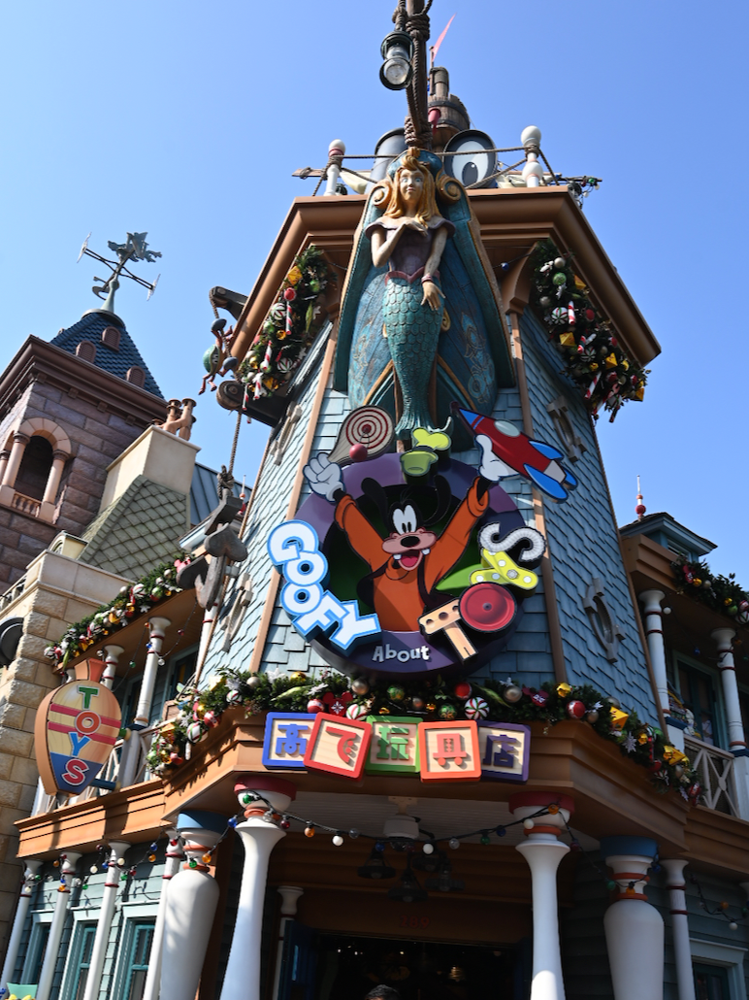
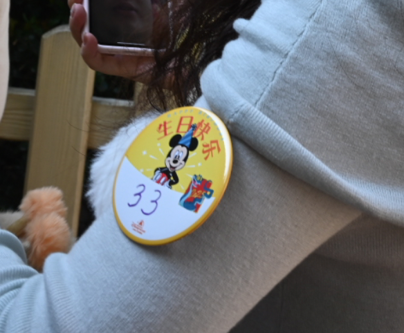
下午去了疯狂动物城。看到豹警官的时候我真的笑得停不下来，排了挺久才轮到，结果走过去以后脑子突然空白，只会站在那里傻笑。旁边的人一直举着手机，我也跟着拍了好多张。它看起来比电影里还圆，而且明明只是坐在那里，现场所有人都像被它控制了一样一起笑。
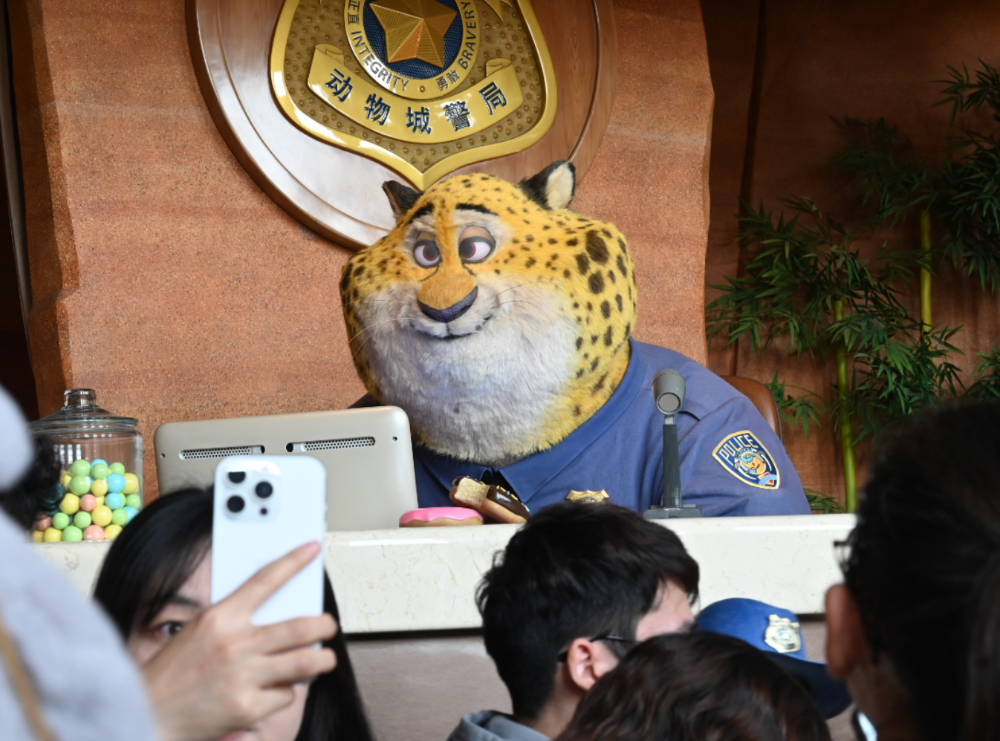
天黑以后完全是另一种感觉。白天一直觉得时间还很多，城堡亮起来以后才发现今天真的快结束了。等烟花的时候腿已经酸得不想动，可第一束光冲上去的时候还是马上把手机拿了出来。现场很吵，前面也全是人，照片不算完美，但我就是很喜欢。
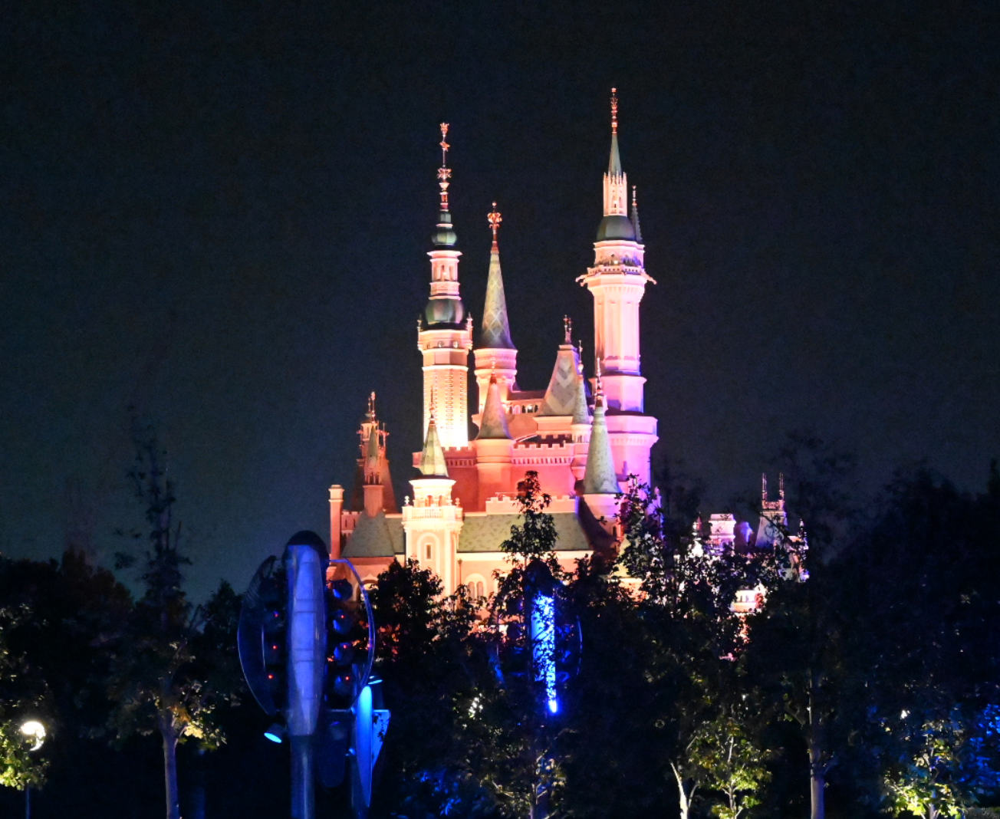
回去的路上大家都累到没怎么说话，我在车上翻照片，发现几乎每一张都有一点糊，或者有人闭眼，但就是这些照片让我觉得今天真的发生过。现在脚还是很酸，可如果明天有人问我要不要再去一次，我应该还是会立刻说要。
刚进园的时候还没完全清醒，拿着票对着城堡拍了好几张。第一张有点糊，可它特别像今天真正开始的那一秒。
分享
分享给
加入到合集
我今天还有什么需要处理？
今天有两件事：确认上海出差的机票，以及查看 Lin 刚分享的架构笔记。建议先处理机票。
第一家店有哪些招牌菜
八合里最常被点的是 ，一次能尝到多种部位； 肉味更足， 弹韧， 适合先喝汤，想加一道炸物可以点 。
雨润田这家店口味辣吗？
雨润田的藕汤本身不辣，整体偏鲜香。香辣藕片和干锅类辣度更明显，点单时可以备注少辣。
第一家店有哪些招牌菜
八合里常点至尊牛肉三拼、吊龙伴、熟牛肉丸、牛骨清汤锅和特色酥牛肉。
雨润田这家店口味辣吗？
雨润田的藕汤本身不辣，整体偏鲜香。香辣藕片和干锅类辣度更明显，点单时可以备注少辣。